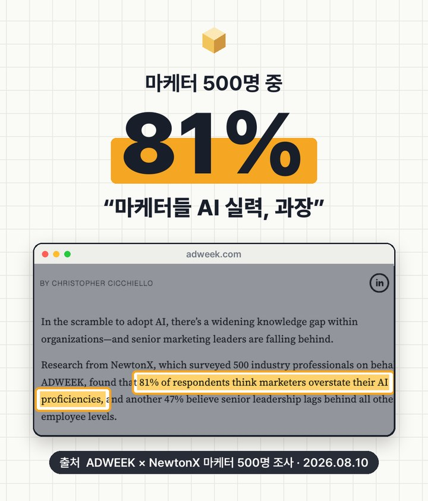
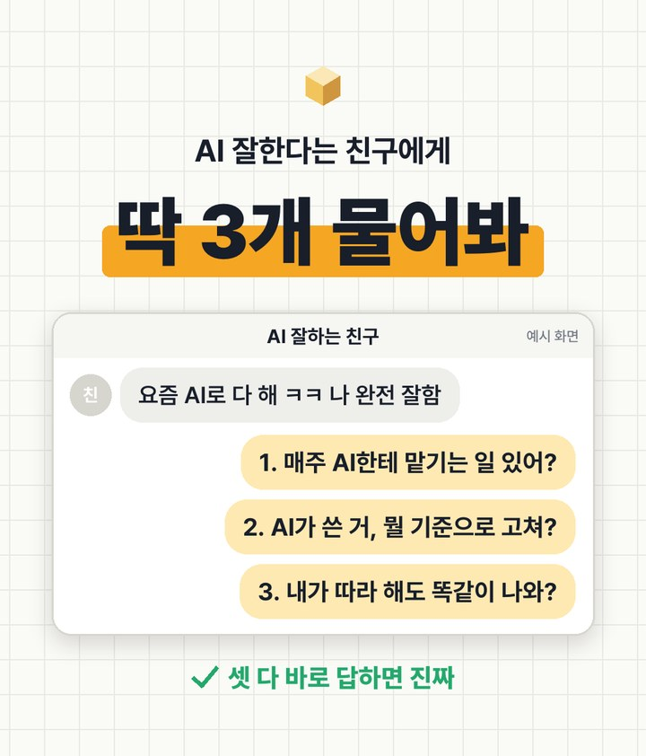
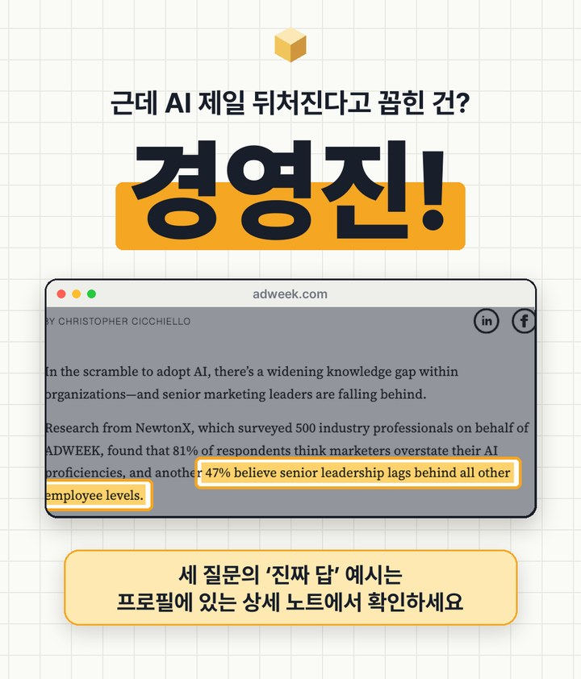

AI 잘한다는 마케터,
81%는 과장
ADWEEK와 리서치 회사 NewtonX가 마케터 500명에게 물었더니, 81%가 "마케터들은 AI 실력을 과장한다"고 답했어요. AI 잘한다고 자랑하는 친구가 있다면, 아래 질문 3개만 물어보세요. 물론 나한테 먼저요.
01릴스 다시 보기



옆으로 넘겨 보세요 →
02기사에 나온 숫자
모두 같은 조사예요. NewtonX가 ADWEEK 의뢰로 업계 종사자(마케터) 500명에게 물었어요. 같은 기사에는 가트너 조사도 나와요. CEO 중 15%만 "우리 CMO는 2026년을 이끌 만큼 AI를 안다"고 봤대요.
'과장한다'는 응답자들의 생각이에요. 실력을 시험으로 잰 결과는 아니에요. 기사에 응답자 국가와 조사 기간은 나와 있지 않아요.
03질문 3개와 '진짜 답' 예시
셋 다 바로 답할 수 있으면 진짜예요. 아래는 광고 업무에서 나올 법한 진짜 답 예시예요.
"한 번 써 봤다"가 아니라 반복 업무가 있는지 물어보는 질문이에요.
진짜 답 예: "매주 월요일 PMax 광고 제목 15개 초안은 AI가 쓰고, 글자 수 검사까지 시켜. 그다음 내가 골라." (EP.07)
고치는 기준이 적혀 있는지 물어보는 질문이에요. 기준이 없으면 매번 감으로 고치게 돼요.
진짜 답 예: "브랜드 한 장(색·조명·하지 말 것)이랑 금지어 목록, 매체별 글자 수 표를 붙여 놓고 그거랑 대조해." (EP.09)
방법이 남한테 넘겨줄 수 있는 형태인지 물어보는 질문이에요.
진짜 답 예: "요청문이랑 예시 파일을 팀 드라이브에 올려 뒀어. 그거 그대로 붙이면 누가 해도 비슷하게 나와."
04하나라도 막혔다면
- ①이 막히면이번 주에 두 번 이상 한 일 하나를 골라요. 광고 제목 쓰기, 리포트 요약, 리뷰 정리처럼 작은 거면 돼요.
- ②가 막히면"좋은 결과"의 조건을 세 줄로 적어요. 예: 30자 이내, 효능 단정 금지, 브랜드 톤은 친근하게.
- ③이 막히면잘 나온 대화 하나를 요청문 파일로 저장해요. 아래 프롬프트가 그 일을 대신 해 줘요.
05바로 쓰는 프롬프트
지금까지 이 대화에서 내가 원하는 결과가 나오기까지 시킨 것과 고친 것을 정리해서, 다른 사람이 그대로 붙여 넣으면 같은 결과가 나오는 '요청문 한 장'으로 만들어 주세요. - 맨 위: 이 요청문이 하는 일 한 줄 - 넣어야 할 자료(빈칸으로) - 지켜야 할 기준(글자 수, 금지 표현, 톤) - 결과 형식(표·목록 등) - 결과를 검수하는 체크리스트 3개
💡 결과가 마음에 들었던 대화창에서 바로 이어서 붙이세요. 그 대화에서 고친 내용까지 요청문에 들어가요.
06출처
대행사에서 AI 교육하는 현직 마케터가 직접 써 보고 정리해요.
인스타에서 팔로우